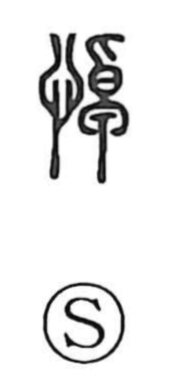

悼

Kun: itamu, kanashimu | On: tou
to mourn ・ lament ・ grieve
Explanation
悼 is a phono-semantic character: the heart element (忄) signals an emotion of the mind, while 卓 serves as the phonetic, giving the on reading tou—just as it does in characters like 掉 and 棹. Classical glosses, transmitted in the Mao commentary to the Book of Odes and cited in the Shuowen tradition, explain 悼 as “to move,” describing grief so deep that it sets the heart in motion. Accordingly, 悼 is used for mourning and lament, as in aitō (哀悼), the act of grieving for the dead.